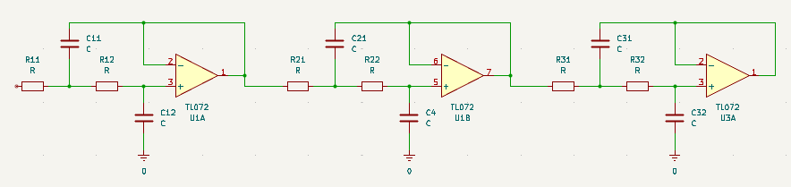

Sallen-Key Filter design
Filter specifikationer
Type:
Low-Pass (LP)
High-Pass (HP)
Approksimation:
Butterworth
Chebyshev
Cutoff (fc):
Hz
kHz
MHz
Stopband (fs):
Hz
kHz
MHz
Passband Atten (dB):
Stopband Atten (dB):
Praktisk komponent valg
Basis Kondensator:
nF
uF
pF
C E-række grænse:
E6
E12
R E-række grænse:
E12
E24
E48
E96
(Kondensatorer tvinges til valgt E-række)
Beregn filter
Eksportér SPICE (.cir)
Brug E-række i SPICE
Filter Orden: -
Stabilitet: Venter...
Komponent
Ideel / Krævet
E-række valg
Q-faktor
Reference Diagram for LP (Byt om på R og C ved HP)
